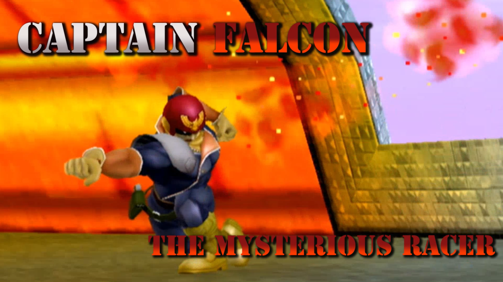

Captain "Douglas Jay" Falcon est le protagoniste de la série de jeu video, F-Zero. En plus d'etre champion du Grand prix F-Zero, lorsqu'il ne fait pas de courses, il travaille comme chasseur de primes. En restant fidele a ses origines, dasn SSBM, Captain Falcon est rapide et agile. Captain Falcon est reconnu comme le personnages le plus électrifiant de SSBM, ses combos rapide et explosifs font de Captain Falcon, le favori de la foule.

Captain Falcon possede des attaques tres longes, cela fait en sorte qu'il excelle contre les personnages plus défensifs et lent. Il a l'avantage d'etre extremement agile, cela lui permet d'éviter des attaques facilement et pouvoir contre-attaquer imédiatement. Malgré tout ses atouts, Captain Falcon a un talon d'achile, du a ses options limité pour revenir ses le terrain, il est plus susceptible au gimps (technique qui permet d'éliminer un enemi rapidement sur le bord du terrain).